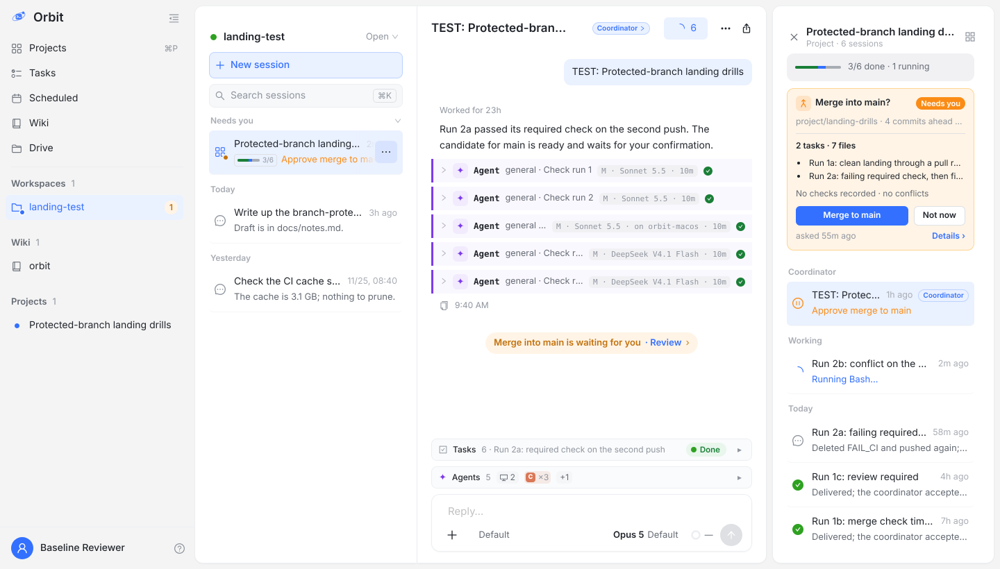
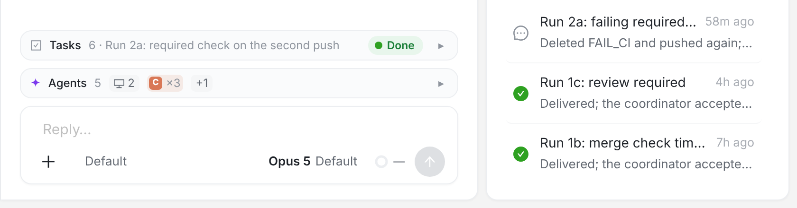
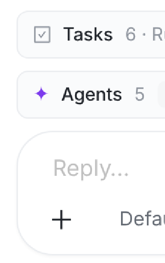

Composer 圆角 · 与面板、条协调
接着 ③（已提交 1c9fc6fbff：composer 用面板的描边和阴影）。真实会话页，本分支 build，1440×820，2x。三列只换圆角，其它一律不动。
今天三档圆角：
| 元素 | 今天 | ② composer 跟面板 | ③ 全部跟面板 |
|---|---|---|---|
面板（列表+对话、右栏）--panel-radius | 12px | 12px | 12px |
| Composer | 24px | 12px | 12px |
Tasks / Agents 条（.bg-tray） | 8px | 8px | 12px |
待读消息托盘（.pending-tray，同一带） | 12px | 12px | 12px |
2cd162c3c4 定了"一个圆角"；composer 的 24px 和条的 8px 都早于它。composer 内容的 24px 起始线（文字、缩略图、+ 号）这次不动，只改圆角。
A · 整窗
① 今天composer 24 · 条 8 · 面板 12

② composer 跟面板composer 12 · 条 8 · 面板 12

③ 一个圆角推荐composer 12 · 条 12 · 面板 12
B · 下半部（条、composer、面板底边、右栏）


上面两条是小方角，下面突然一个胶囊；三个叠着的盒子三种形状。
composer 和面板一致了，但条仍比它方一档，叠在一起能看出差别。
条、composer、面板、右栏同一个角；这一带读成一组卡片。
C · 左边缘放大 3×

③ 的改动范围
src/web/src/index.css：·
.composer-box border-radius: 24px → var(--panel-radius, 12px)·
.bg-tray 8px → var(--panel-radius, 12px)（Tasks、Agents、后台 shell 条共用这一个类）· 注释里"24px 圆角 = 24px 起始线"那句改成只说起始线
窄屏没有
--panel-radius，取 12px 兜底，所以窄屏也一样。待你定
③ 一个圆角（推荐）、② 只改 composer，还是 ① 保留 24px 胶囊？注意：iOS 的 composer 也是大圆角胶囊；如果 web 改 12px，iOS / Android 要不要跟，另行决定，这次只动 web。